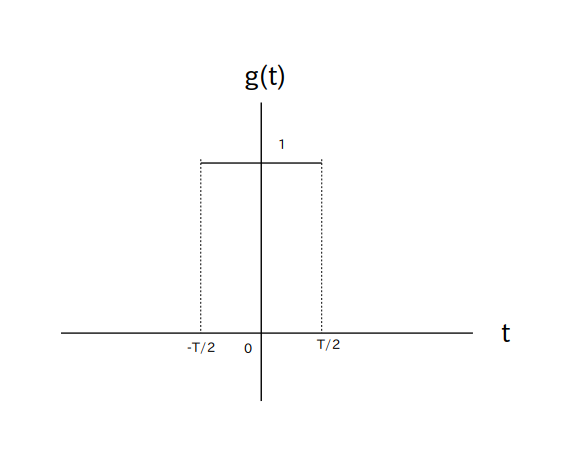

フーリエ変換はテキストなどではフーリエ級数展開の周期 $\textrm{T}$ [秒]を無限大するという操作をした物と説明されることが多いのですが、厳密に言えば周期をいくら大きくしたところでフーリエ級数展開の式で出てきた総和記号 $\Sigma$ がフーリエ変換の積分記号 $\int$ に置き換わることはありません。
実は「周波数領域内でフーリエ変換にくし型関数をかけてインパルス信号列化する」という行為がフーリエ変換とフーリエ級数展開を結びつけるための本質的な操作となります。
このページではそれについて詳しく説明します。
$f(t)$ が周期 $\textrm{T}$ [秒] の周期的なアナログ信号のとき、 $f(t)$ をフーリエ変換するだけでそのまま複素フーリエ係数が求まりそうな気がしますが、$f(t)$ は絶対可積分条件を満たさないので一般的な意味でのフーリエ変換は存在しません。
※ このページを読み進めて行くと分かりますが、デルタ関数の様な超関数の使用を許せばフーリエ変換が存在する場合もあります。
そこで $f(t)$ 全体をフーリエ変換することは諦め、以下の窓関数
\[ g(t) = \begin{cases} 0 \ & t < -\frac{\textrm{T}}{2} \\[10pt] 1 \ & -\frac{\textrm{T}}{2} \leq t \leq \frac{\textrm{T}}{2} \\[10pt] 0 & t > \frac{\textrm{T}}{2} \end{cases} \]を $f(t)$ にかけ、$f(t)$ から 1 周期分だけ切り出した信号 $f(t)\cdot g(t)$ を代わりにフーリエ変換することにします(図1)。
$\textrm{T}$ [秒] は周期

すると $f(t)\cdot g(t)$ のフーリエ変換 $\textrm{F}(w)$ から $f(t)$ の複素フーリエ係数 $\textrm{C}[k]$ を求めることが出来ます。
具体的には次のことが言えます。
$f(t)$ を周期 $\textrm{T}$ [秒] の周期的なアナログ信号とする。
また $w_1 = 2\pi/\textrm{T}$ [rad/秒] を基本角周波数とする。
さらに $f(t)$ に図1の窓関数をかけた信号 $f(t)\cdot g(t)$ のフーリエ変換を $\textrm{F}(w)$ とする。
$k$ を任意の整数としたとき、 $\textrm{F}(w)/\textrm{T}$ を $k \cdot w_1$ [rad/秒] おきにサンプリングした値は $f(t)$ の複素フーリエ係数 $\textrm{C}[k]$ と一致する。
すなわち
この証明は簡単で、まず基本周波数 $w_1$ [rad/秒]をサンプリング間隔として $\textrm{F}(w)$ をサンプリングしてディジタル信号列 $\textrm{F}( k \cdot w_1)$ を作ります。
よって $f(t) \cdot g(t)$ のフーリエ変換より
\begin{align*} \textrm{F}( k \cdot w_1) & = \int_{-\infty}^{\infty} \left \{ f(t) \cdot g(t) \cdot \textrm{e}^{\{-j \cdot k \cdot w_1 \cdot t \}} \right \} \textrm{d}t \\[10pt] & = \int_{-\textrm{T}/2}^{\textrm{T}/2} \left \{ f(t) \cdot \textrm{e}^{\{-j \cdot k \cdot w_1 \cdot t \}} \right \} \textrm{d}t \\[10pt] (\text{複素フーリエ係数の定義より})& = \textrm{T} \cdot \textrm{C}[k] \end{align*}なので
\[ \textrm{C}[k] = \frac{1}{\textrm{T}} \cdot \textrm{F} ( k \cdot w_1 ) \]
という関係が導かれます。
次は $f(t)\cdot g(t)$ のフーリエ変換 $\textrm{F}(w)$ を逆変換して複素フーリエ級数展開、つまり $f(t)$ を求めてみます。
ただしそのまま逆フーリエ変換しても単に $f(t)\cdot g(t)$ が復元するだけなので、次のように少しだけ手間をかけます。
$f(t)$ を周期 $\textrm{T}$ [秒] の周期的なアナログ信号とする。
また $w_1 = 2\pi/\textrm{T}$ [rad/秒] を基本角周波数とする。
さらに $f(t)$ に図1の窓関数をかけた信号 $f(t)\cdot g(t)$ のフーリエ変換を $\textrm{F}(w)$ とする。
この時 $\textrm{F}(w)$ にサンプリング間隔 $w_1 = 2\pi/\textrm{T}$ [rad/秒] と $w_1$ 間隔のくし型関数をかけて作った
\[ \textrm{F}'(w) = \frac{2\pi}{\textrm{T}} \cdot \textrm{F}(w) \cdot \sum_{k=-\infty}^{\infty} \ \delta(w - k \cdot w_1 ) \]
の逆フーリエ変換は $f(t)$ の複素フーリエ級数展開と一致する。
すなわち
こちらの証明はやや難解です。
まずサンプリング間隔 $w_1$ [rad/秒] おきにデルタ関数 $\delta(t)$ を並べた信号
\[ \textrm{comb}_{w_1}(w) = \sum_{k=-\infty}^{\infty} \delta(w-k\cdot w_1) \]
を考えます。
この信号は「くし型関数」と呼ばれます。
次に $\textrm{F}(w)$ にこのくし型関数をかけて作った信号を
\[ \textrm{F}'(w) = \frac{2\pi}{\textrm{T}} \cdot \textrm{F}(w) \cdot \sum_{k=-\infty}^{\infty} \ \delta(w - k \cdot w_1 ) \]
とすると、この$\textrm{F}'(w)$ は $\textrm{F}(w)$ をサンプリングして作成したインパルス信号列となります。
なお最終的に複素フーリエ係数とゲインを合わせるため、サンプリング間隔 $w_1 = 2\pi/\textrm{T}$ を全体にかけています。
※ 何故ここでいきなりくし型関数をかけてるのか不思議な人がいるかもしませんが、詳しく説明するにはサンプリングの理論から説明しないと駄目なので、とりあえず今回はサンプリングというのはそういうものだと思ってください。興味があるひとはこちらやこちらの話なども参考にしてください。
次にこの $\textrm{F}'(w)$ に対して逆フーリエ変換を計算して $f'(t)$ を求めます。
すると
となるので、インパルス信号列 $\textrm{F}'(w)$ の逆フーリエ変換は $f(t)$ の複素フーリエ級数展開と一致します。
言い換えれば周期的な信号 $f(t)$ のフーリエ変換はインパルス信号列 $\textrm{F}'(w)$ です。
※ 最初の方で周期的な信号のフーリエ変換は一般的な意味では存在しないと書きましたが、デルタ関数の使用を許せばフーリエ変換を求めることが可能になります
この様に
非周期的なアナログ信号のフーリエ変換に対して周波数領域内でくし型関数をかけてインパルス信号列化すると時間領域では周期的な信号に変わる
という性質がありますので覚えておいてください。
同様に
(周期的か非周期的を問わず)アナログ信号に対して時間領域内でくし型関数をかけてインパルス信号列化すると周波数領域内でフーリエ変換は周期的になる
という性質もあります。
これについてはここでは説明しないので、興味があったらこちらを参考にしてください。
ところで上の式中で「←注目」と書いた行でフーリエ変換の式中の積分記号 $\int$ が フーリエ級数展開の式中の総和記号 $\Sigma$ に置き換わっていることに着目してください。
この事から「周波数領域内でフーリエ変換にくし型関数をかけてインパルス信号列化する」という行為がフーリエ変換とフーリエ級数展開を結びつけるための本質的な操作だということが分かります。
今度は逆に$f(t)$ の複素フーリエ係数 $\textrm{C}[k]$ から $f(t)\cdot g(t)$ のフーリエ変換 $\textrm{F}(w)$ を求めてみましょう。
結論は次の通りです。
$f(t)$ を周期 $\textrm{T}$ [秒] の周期的なアナログ信号とする。
また $w_1 = 2\pi/\textrm{T}$ [rad/秒] を基本角周波数とする。
さらに $f(t)$ に図1の窓関数をかけた信号 $f(t)\cdot g(t)$ のフーリエ変換を $\textrm{F}(w)$ とする。
$f(t)$ の複素フーリエ係数 $\textrm{C}[k]$ に対してsinc補間(理想ローパスフィルタ処理)をおこなうと $\textrm{F}(w)$ になる。
すなわち
まず (2) で示したように周期的な信号 $f(t)$ を逆フーリエ変換するとインパルス信号列 $\textrm{F}'(w)$ になります。
また $f(t)$ に図1で示した窓関数 $g(t)$ をかけて作った信号が $f(t)\cdot g(t)$ でした。
さらに(証明は省略しますが) $g(t)$ の逆フーリエ変換は
です。
よって $\textrm{F}(w)$ は(式中の * は畳み込み積分)
\begin{align*} \textrm{F}(w) & = \frac{1}{2\pi} \cdot (\textrm{F}' * \textrm{G})(w) \\[10pt] &= \int_{-\infty}^{\infty} \frac{1}{\textrm{T}} \cdot \textrm{F}(\xi) \cdot \sum_{k=-\infty}^{\infty} \ \delta(\xi - k \cdot w_1 ) \cdot \textrm{T} \cdot \textrm{sinc} \frac{ (w - \xi) \cdot \textrm{T} }{2} \ \textrm{d}\xi \\[10pt] &= \int_{-\infty}^{\infty} \sum_{k=-\infty}^{\infty} \ \frac{1}{\textrm{T}} \cdot \textrm{F}(k \cdot w_1) \cdot \delta(\xi - k \cdot w_1 ) \cdot \textrm{T} \cdot \textrm{sinc} \frac{ (w - \xi) \cdot \textrm{T} }{2} \ \textrm{d}\xi \\[10pt] &= \int_{-\infty}^{\infty} \sum_{k=-\infty}^{\infty} \textrm{C}[k] \cdot \delta(\xi - k \cdot w_1 ) \cdot \textrm{T} \cdot \textrm{sinc} \frac{ (w - \xi) \cdot \textrm{T} }{2} \ \textrm{d}\xi \\[10pt] &= \sum_{k=-\infty}^{\infty} \int_{-\infty}^{\infty} \textrm{C}[k] \cdot \delta(\xi - k \cdot w_1 ) \cdot \textrm{T} \cdot \textrm{sinc} \frac{ (w - \xi) \cdot \textrm{T} }{2} \ \textrm{d}\xi \\[10pt] &= \textrm{T} \cdot \sum_{k=-\infty}^{\infty} \textrm{C}[k] \cdot \int_{-\infty}^{\infty} \delta(\xi - k \cdot w_1 ) \cdot \textrm{sinc} \frac{ (w - \xi) \cdot \textrm{T} }{2} \ \textrm{d}\xi \\[10pt] &= \textrm{T} \cdot \sum_{k=-\infty}^{\infty} \textrm{C}[k] \cdot \textrm{sinc} \frac{ (w - k \cdot w_1) \cdot \textrm{T} }{2} \end{align*}で求まります。
参考までに簡単な例を示しましょう。
\[ f(t) = \sin (w1\cdot t ) \]の時、複素フーリエ係数はオイラー公式より
\[ \begin{cases} \textrm{C}[1] = \frac{1}{2j} \\[10pt] \textrm{C}[-1] = -\frac{1}{2j} \\[10pt] \textrm{C}[k] = 0 \ (k \ne \pm1) \end{cases} \]です。
一方、
\[ f(t) \cdot g(t) = \begin{cases} 0 \ & t < -\frac{\textrm{T}}{2} \\[10pt] \sin(w1\cdot t) \ & -\frac{\textrm{T}}{2} \leq t \leq \frac{\textrm{T}}{2} \\[10pt] 0 & t > \frac{\textrm{T}}{2} \end{cases} \]のフーリエ変換は(証明は省略しますが)
\[ \textrm{F}(w) = \frac{\textrm{T}}{2j} \cdot \textrm{sinc} \frac{ (w - w_1) \cdot \textrm{T} }{2} - \frac{\textrm{T}}{2j} \cdot \textrm{sinc} \frac{ (w + w_1) \cdot \textrm{T} }{2} \]
です。
よって
であることが分かります。
最後に $f(t)$ の複素フーリエ級数展開から逆フーリエ変換、つまり $f(t)\cdot g(t)$ を求めてみます。
これは非常に簡単です。
$f(t)$ の複素フーリエ級数展開を求め、複素フーリエ係数 $\textrm{C}[k]$ から (3) で挙げた sinc 補間を適用して $\textrm{F}(w)$ を復元する。
あとは$\textrm{F}(w)$ に対して逆フーリエ変換をすれば $f(t)\cdot g(t)$ が出てくる。